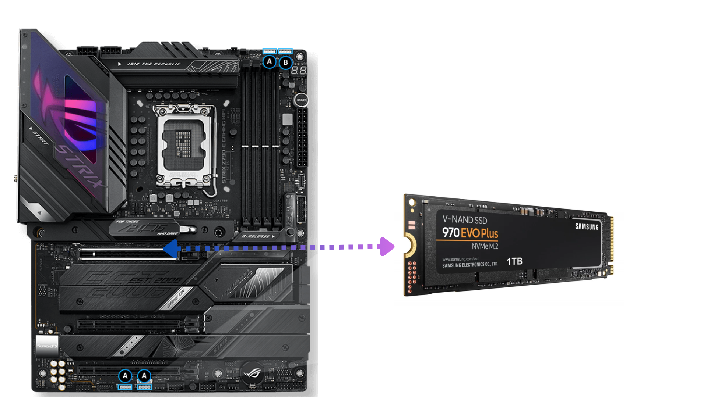
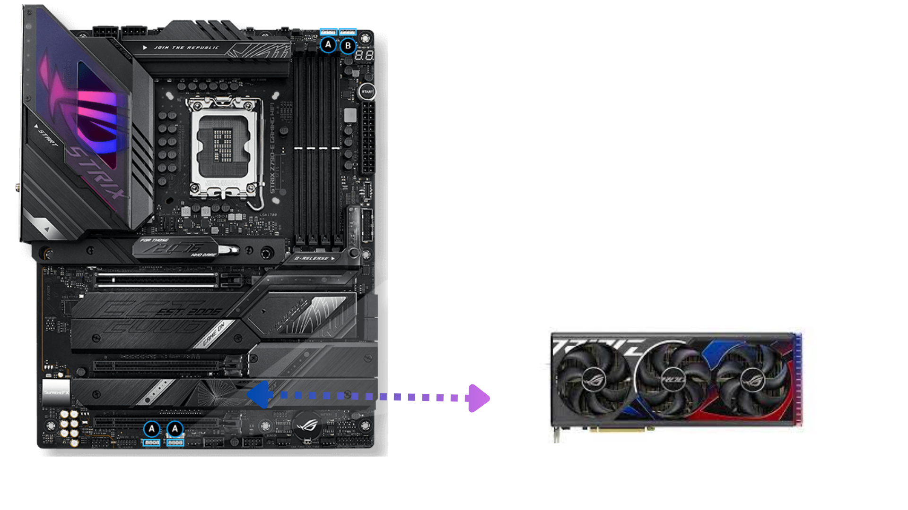
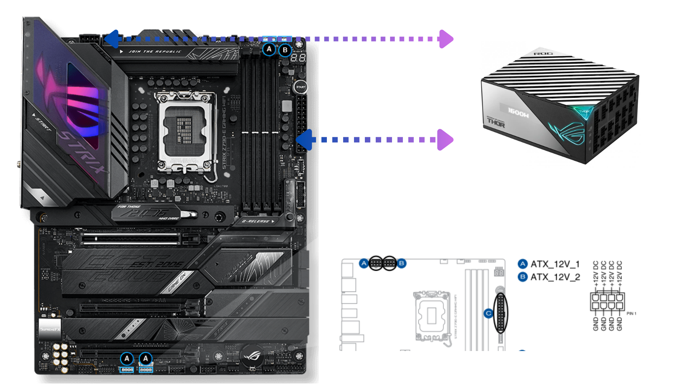
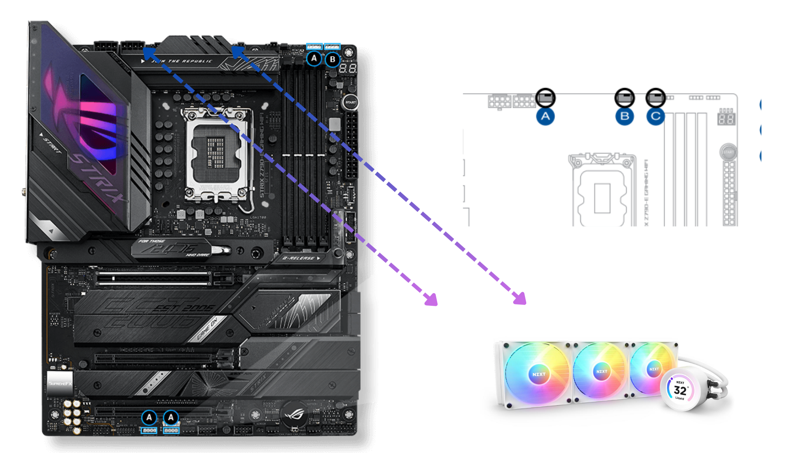
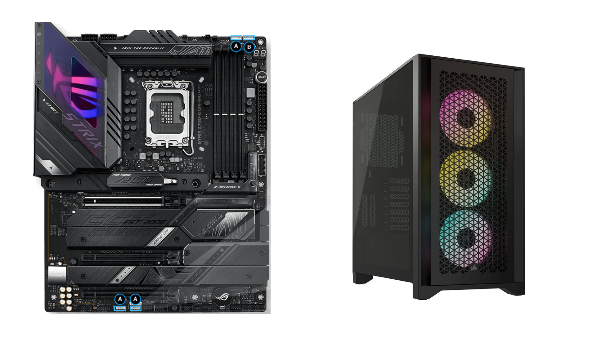

Antes de começar, defina o propósito do seu computador e o seu orçamento. Decida se deseja um computador para jogos, trabalho, edição de vídeo, etc., e baseie suas escolhas de componentes nisso.
2 Lista de Componentes.
Processador (CPU): Escolha um processador adequado ao seu propósito, levando em consideração a marca, modelo e compatibilidade com a placa-mãe.
Placa-mãe (Motherboard): Selecione uma placa-mãe que seja compatível com o processador escolhido. Certifique-se de que tenha os recursos necessários, como slots de memória, portas USB e conectores para discos rígidos.
Memória RAM: Escolha a quantidade de memória RAM necessária para suas tarefas. Verifique a compatibilidade com a placa-mãe e a velocidade desejada.
Placa de vídeo (GPU): Se você planeja jogos ou edição de vídeo, considere uma placa de vídeo dedicada. Novamente, certifique-se de que seja compatível com a placa-mãe.
Fonte de alimentação (PSU): Escolha uma fonte de alimentação com capacidade suficiente para fornecer energia a todos os componentes. Verifique se possui os conectores adequados.
Armazenamento: Decida se deseja um disco rígido (HDD) ou uma unidade de estado sólido (SSD) para armazenamento. Pode ser uma boa ideia ter ambos, com o SSD para o sistema operacional e os programas.
Gabinete: Escolha um gabinete que comporte todos os componentes e que permita uma boa ventilação. Certifique-se de que a placa-mãe se encaixe adequadamente.
Teclado e mouse (se não os tiver): Adicione periféricos básicos, como um teclado e um mouse, se você não os tiver.
Monitor (se não o tiver): Se necessário, adquira um monitor que atenda às suas necessidades de tamanho e qualidade de imagem.
Unidade de CD/DVD (opcional): Se ainda precisar de uma unidade de disco óptico, inclua-a em sua lista.
Outros periféricos: Se você planeja usar outros dispositivos, como uma webcam, um microfone ou alto-falantes, liste-os também.
3 Compra de Componentes
Compre os componentes que você listou, certificando-se de que sejam compatíveis entre si. Verifique as especificações técnicas e leia avaliações online para fazer escolhas informadas.
4 Montagem
A montagem requer cuidado e atenção aos detalhes. Siga estas etapas:
Descarregue eletricidade estática: Toque em uma superfície metálica para descarregar eletricidade estática de seu corpo, a fim de evitar danos aos componentes.
Prepare o gabinete: Coloque a placa-mãe no gabinete, alinhando os furos de montagem. Anexe-a usando os parafusos fornecidos.
Instale a CPU: Siga as instruções do fabricante da placa-mãe para instalar a CPU no soquete apropriado.
Instale a memória RAM: Encaixe os módulos de memória nos slots da placa-mãe.
Conecte a placa de vídeo: Se você tiver uma placa de vídeo dedicada, encaixe-a na ranhura PCIe apropriada na placa-mãe.
Conecte os cabos: Conecte os cabos da fonte de alimentação, SATA para o armazenamento, e outros dispositivos à placa-mãe.
Instale unidades de armazenamento: Fixe os discos rígidos e/ou SSDs no gabinete e conecte-os à placa-mãe e à fonte de alimentação.
Conecte os periféricos: Conecte o teclado, o mouse, o monitor e outros periféricos ao computador.
Feche o gabinete: Coloque a tampa do gabinete e aperte os parafusos para prendê-la no lugar.
5 Instalação do Sistema Operacional
Insira o disco de instalação do sistema operacional (como o Windows) ou crie um pendrive de instalação. Siga as instruções para instalar o sistema operacional no seu computador.
6 Drivers e Atualizações
Após a instalação do sistema operacional, instale os drivers necessários para os componentes, como placa de vídeo, placa-mãe e outros dispositivos. Certifique-se de que seu sistema esteja atualizado com as últimas atualizações de software e drivers.
7 Teste e Solução de Problemas
Ligue o computador e verifique se tudo funciona como esperado. Se você encontrar problemas, consulte o manual dos componentes e pesquise online para soluções.`,
NOTA: Para obter melhor desempenho, emparelhe módulos de memória do mesmo tipo, velocidade e capacidade.Por este motivo instale as memórias de 32 GB juntas, obtendo uma configuração de 64 GB.
NOTA: As memórias de 16 GB estão juntas para facilitar o gerenciamento da memória e manter o equilíbrio. Isso resultaria em uma configuração de 32 GB.
Storage: Samsung 970 Evo Plus 2-2280 PCIe 3.0 X4 NVME Solid State Drive

NOTA: Deve-se ter cuidado no manuseio, não deixando cair as unidades ou expô-las a choques ou vibrações repentinas.
Placa grafica Asus ROG STRIX GAMING OC GeForce RTX 4090 24 GB Video Card

NOTA: A placa gráfica deve ser manuseada com cuidado, não tocando nos pinos para evitar danos físicos.
Fonte de alimentaçãoAsus ROG THOR 1600T Gaming 1600 W 80+ Titanium Certified Fully Modular ATX Power Supply

NOTA:Devemos ter cuidado ao conectar os cabos de alimentação à placa-mãe, placa gráfica, unidades de armazenamento e outros componentes para fazer isso corretamente
CPU COOLER: NZXT Kraken Elite 360 RGB 78.02 CFM Liquid CPU Cooler

NOTA: Não devemos apertar demais os parafusos, pois isso pode danificar a placa-mãe ou o processador. Antes de ligar devemos colocar a pasta entre o processador e o cooler.
Case: Corsair iCUE 4000D RGB AIRFLOW ATX Mid Tower Case

NOTA: Devem ser utilizadas ferramentas e parafusos adequados, estes não devem ser apertados demais para evitar danos à caixa ou aos componentes.